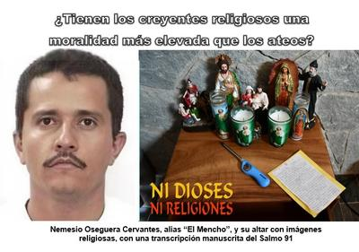

Este texto es un análisis escrito en un contexto informativo, periodístico y didáctico, que de ninguna forma promueve, fomenta o celebra la violencia ni el crimen. Toda mención a crimen organizado, narcotráfico, cárteles, capos, droga, balas, hechos sangrientos o violentos, asesinatos, violaciones, secuestros, extorsiones; así como a pederastas, genocidios, esclavitud o relaciones incestuosas, se hace exclusivamente con fines informativos, didácticos y críticos, sin que implique en ningún caso su justificación, promoción o apología.


El pasado domingo 22 de enero de 2026, fue capturado en la sierra de Jalisco, México, el narcotraficante más buscado por las autoridades de ese país y de Estados Unidos, quien había logrado escapar de múltiples operativos durante más de una década. Se trata de Rubén Nemesio Oseguera Cervantes, de 59 años, más conocido por su apodo de «El Mencho», y también como «El Señor de los Gallos», debido a su pasión por las peleas de gallos.
Nacido en 1966, El Mencho creció con sus cinco hermanos en el seno de una familia campesina pobre que cultivaba aguacates, abandonó la escuela primaria en el quinto grado para trabajar en el campo, y llegó a convertirse en el fundador del Cártel Jalisco Nueva Generación (CJNG), una organización que desde 2010 se extendió por todo México, llegando a ser una de las bandas criminales más poderosas y violentas, junto con el Cártel de Sinaloa.
Durante el operativo encabezado por el Ejército mexicano, El Mencho perdió la vida. Pero este evento no sólo marca el fin de uno de los capítulos más sangrientos del narcotráfico mexicano contemporáneo, sino que vuelve a poner sobre la mesa una realidad incómoda: la profunda religiosidad de muchos de los criminales más violentos del continente.
En la lujosa cabaña donde pasó su último fin de semana —en el exclusivo Tapalpa Country Club, en Jalisco— se halló un altar con imágenes de la Virgen de Guadalupe, San Judas Tadeo y otros. Y junto a ellas el Salmo 91 copiado a mano, invocando protección divina. Había también un libro de oraciones a Santa Rita de Casia, y un escapulario del Sagrado Corazón de Jesús. Si, aquella persona a la que se le atribuyeron aproximadamente 75.000 muertes, era un religioso devoto.
¿Te sorprende? —pues, nada de esto es excepcional en el mundo del narco. Es, de hecho, parte del paisaje cultural del crimen organizado latinoamericano. Esto, a pesar de que durante siglos se ha repetido la idea de que la fe religiosa es el fundamento indispensable de la moral. Se nos dice que sin la Biblia no hay ética; que sin «Dios» no hay freno al mal, y que los ateos carecemos de brújula moral. Pero paradójicamente, muchos de los peores criminales del continente son devotos activos.
En Estados Unidos los propios capellanes penitenciarios (sí, porque los hay) reconocen que la población carcelaria es mayoritariamente creyente, con una fuerte presencia cristiana y minorías religiosas activas —como musulmanes— que superan en promedio el 5% o más de la población reclusa en varios estados. Mientras que en América Latina, donde alrededor del 89% de la población se identifica como cristiana, las cárceles reflejan ese mismo perfil: alta religiosidad, abundancia de Biblias, cultos frecuentes y predicadores visitantes. O sea, hay un hecho contundente: una aplastante mayoría de quienes cometieron delitos, son personas religiosas, creyentes en un «Dios» y practicantes de alguna religión.
Son muchas las prisiones donde se reparten Biblias gratuitamente, y donde pastores y evangelizadores organizan cultos semanales. Y es que más allá de cualquier intención espiritual, el efecto psicológico es evidente: la religión funciona como anestesia emocional: ofrece consuelo, sentido, esperanza futura. Actúa como un sedante simbólico en medio de la brutalidad del encierro.
Ese mismo «consuelo» sin embargo, no impidió que muchos de esos reclusos cometieran asesinatos, violaciones, secuestros o extorsiones. Pero el fenómeno no es nuevo. En el norte de México, algunos narcos han sido devotos de Jesús Juárez Mazo (1870-1909), más conocido como Jesús Malverde, un antiguo salteador de caminos del Estado de Sinaloa que llegó a ser capo del narcotráfico, y que posteriormente fue convertido en «santo» no oficial. Se han construido capillas en su honor. Asimismo se dan casos de capos que han donado templos, financiado parroquias, o incluso utilizado iglesias para lavar dinero. Y hasta el propio Mencho tenía sus devociones particulares: altares, escapularios y salmos no son detalles marginales, forman parte de un imaginario donde la violencia extrema convive con la piedad ritual.
El antropólogo de la Universidad de Columbia, Estados Unidos, Claudio Lomnitz (n. en 1957), explica que estos grupos manejan un repertorio difuso de creencias: santería, devociones católicas oficiales, como San Judas Tadeo o supersticiones locales. Pero según él no hay contradicción interna: todo coexiste si ofrece protección simbólica. Porque para los criminales la fe no es un obstáculo moral, es un recurso mágico.
También es frecuente en Latinoamérica y Estados Unidos el fenómeno de la conversión carcelaria. Delincuentes que tras años de violencia emergen como «hombres nuevos», o «renacidos», con una Biblia bajo el brazo, y que se convierten de la noche a la mañana en pastores o predicadores itinerantes. Sujetos que suelen relatar con detalles escabrosos a su público sus crímenes pasados —a veces con evidente teatralidad— para magnificar el supuesto milagro de su redención. «Cristo me salvó», dicen, y muchos oyentes asienten emocionados. El mensaje implícito es inquietante: no importa lo que hiciste. Lo que importa es que ahora creas en esa doctrina y te arrepientas.
Y aquí entra en juego una de las piezas teológicas más polémicas del cristianismo: la «justificación por la fe», articulada por Pablo de Tarso en su carta a los Romanos (Romanos 3:28; 4:1–5), y cuya idea central es que el ser humano es justificado ante «Dios» no por sus obras, sino por su fe. Siglos después, Martín Lutero convertiría ese principio en piedra angular de la Reforma Protestante.
Llevada a su extremo, esta doctrina implica que un criminal arrepentido en su lecho de muerte podría acceder al Cielo por haber «aceptado a Jesús» en el último instante, mientras que una persona ética pero incrédula quedaría excluida. Según esta lógica, el alma de El Mencho podría estar ahora mismo en el Cielo junto a algunas de sus víctimas, si antes de morir reafirmó su fe y pidió perdón. ¿Acaso no resulta moralmente desconcertante?
Ahora, en el caso de los católicos, tampoco deberían escandalizarse, ya que ellos, sin ningún escrúpulo, convirtieron en «santo» al polaco Karol Wojtyła (1920-2005), más conocido como Juan Pablo II, decidido protector de clérigos pederastas de distintos países. Pederastas tan monstruosos como el cura mexicano Marcial Maciel, o el ex cardenal estadounidense Theodore McCarrick. A Juan Pablo II los católicos han levantado numerosas estatuas, altares y capillas en todo el mundo. Y si esa complicidad delincuencial del papado no impide la santidad y veneración de quien la cometió, ¿por qué asombrarse por los altares privados de un capo?
Y bueno, con esa falsa idea de que las religiones y libros sagrados contienen enseñanzas de la más alta moralidad para el ser humano, es que en distintos países algunos legisladores han propuesto la lectura obligatoria de la Biblia en escuelas públicas, bajo el argumento de que formaría ciudadanos moralmente superiores. Obviamente se trata de políticos que nunca han leído realmente la Biblia, por lo que no se dan cuenta de que su libro sagrado contiene episodios de asesinatos, violaciones, genocidios, esclavitud y relaciones incestuosas. Por tanto, pensar que con sólo exponer diariamente este libro a los niños mejorará su moralidad, es una simplificación peligrosa, además de absurda.
Todo esto nos hace reafirmar que la moral humana no depende de la adhesión a ningún dogma, sino de estructuras sociales, educación crítica, empatía y responsabilidad legal. La fe, tal como está demostrado, no vacuna contra la violencia. Y si bien el caso de El Mencho no demuestra que la religión cause el crimen, desmonta al menos el mito de que la fe lo impide.
Los altares en casas de sicarios, las Biblias en celdas, las capillas financiadas por capos y las conversiones repentinas de asesinos, lo único que demuestra es que la religiosidad puede convivir perfectamente con la brutalidad y con el crimen.
Así que al final, lo que debería incomodar a los creyentes no es por qué los ateos no creemos, sino por qué, pese a tanta gente creyente, la violencia y el crimen siguen floreciendo bajo la sombra de las creencias religiosas.
[Godless Freeman]
https://es.wikipedia.org/wiki/Nemesio_Oseguera_Cervantes
https://www.bbc.com/mundo/articles/cn716z600x7o
https://www.bbc.com/mundo/articles/cq5vervp894o
Comentarios
Comments powered by Disqus